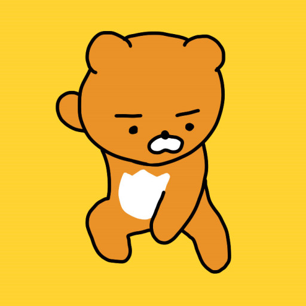
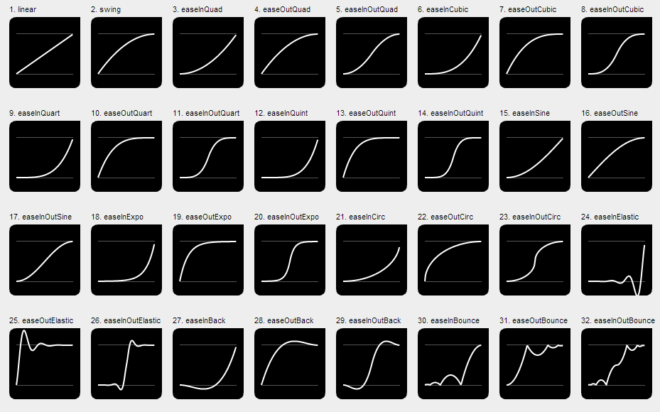

HTML
80%
CSS
80%
javascript
60%
제이쿼리에서는 효과와 애니메이트 메소드를 사용해 사용자가 선택한 요소를 다양하게 움직이게 만들수 있다.
{'속성':'값'} - css속성과 값을 말하며, '값'에는 자바스크립트 변수나 연산자를 사용할 수 있다.
시간 - 애니메이션 동작하는 시간을 말하며 1/1000초=1초를 나타냄
가속도-easing메소드를 활용한 값을 말함(이미지 참조)
콜백함수-callback function으로서 애니메이션 동작이 끝나면 다음 동작을 이어서 실행하고자 할 때 사용.

jquery.com사이트 왼쪽 상단의 ui탭을 클릭하고 왼쪽 easing메뉴에서 jquery.ui라이브러리를 찾아 연결하여 사용한다.
